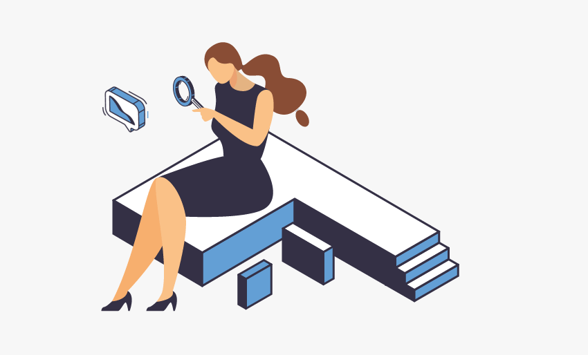

Gedesco SECTOR: Financiación a empresas. PROYECTO:Prototipado de web con todos los recursos gráficos y animados. 
CLUSTER AUDIOVISUAL VALENCIANO SECTOR: Asociación sin ánimo de lucro que pretende ser un cauce para identificar, aflorar y agrupar intereses que mediante proyectos en cooperación den respuesta a los retos estratégicos competitivos, que no tienen respuesta individual. PROYECTO: Creación del naming junto a la identidad corporativa y creación de gráficas para stand de feria para CINEMAJOVE.
INTERCITRUS SECTOR: Organización Interprofesional Agroalimentaria del sector de la naranja y el grupo mandarinas en España. Nora. PROYECTO: Campaña de publicidad con merchandising de cajas obsequio, folletos, carpetas y adeshivos con el claim "VITAMIMA C, TU REFUERZO NATURAL" para fomentar el consumo entre los más jóvenes.
ADHESIVOS TRABAJOS: Soportes adhesivos para diferentes marcas y productos tanto alimentarios como de limpieza. Mareriales con diferentes formatos, acabados y troqueles según packaging.
JUEGO DE LLAVES PELÍCULA: Laura lleva toda la vida con Antonio y, justo cuando se empieza a plantear si realmente esa es la vida que quiere, Sergio y Siena se cruzan en sus vidas. Sergio es un excompañero de instituto y Siena, su novia millenial que llega para revolucionar las vidas de todos. Laura, Raquel y Cris. FECHA DE LANZAMIENTO: 2022 | TIEMPO: 75 minutos | DIRECTOR: Guy Ritcher VALORACIÓN AGREGAR A FAVORITOS
EL BAR PELÍCULA: ‘EL BAR’ es un proyecto peculiar ya que se desarrolla en espacios cerrados: un típico bar español donde sus protagonistas vivirán «delirantes situaciones extremas». Un thriller en el que un grupo de clientes del establecimiento que da título al film se ven acosados súbitamente por un francotirador. FECHA DE LANZAMIENTO: 2019 | TIEMPO: 80 minutos | DIRECTOR: Oliver Santos VALORACIÓN AGREGAR A FAVORITOS
A 1000 KILOMETROS DE LA NAVIDAD PELÍCULA: Raúl es un treintañero al que todas las desgracias de su vida le han sucedido en Navidad. Por eso, odia los villancicos, los Reyes Magos y todo lo que huela a espíritu navideño. Todos los años pasa las fiestas en alguna playa remota, pero este año su jefe tiene otros planes: tendrá que auditar una fábrica de turrones de Valverde, un pueblo que vive por y para la Navidad. FECHA DE LANZAMIENTO: 2022 | TIEMPO: 75 minutos | DIRECTOR: Guy Ritcher VALORACIÓN AGREGAR A FAVORITOS
LA PEQUEÑA SUIZA PELÍCULA: Tellería, un pueblo ubicado en el corazón del País Vasco con quien tiene conexión geográfica y cultural, pertenece anacrónicamente a Castilla-León. Desde hace mucho tiempo sus responsables municipales han intentado, sin éxito, la anexión al País Vasco. FECHA DE LANZAMIENTO: 2022 | TIEMPO: 75 minutos | DIRECTOR: Javier De La Cruz VALORACIÓN AGREGAR A FAVORITOS
MUJERES SIN CENSURA SERIE: Mujeres sin censura es un retrato de la vida de un grupo de actrices que decidieron salir desnudas en la gran pantalla como un acto de libertad en uno de los momentos más tensos de la Historia de España: la Transición. Estigmatizadas, en medio de un machismo dominante, marcado por sus desnudos y el cine de destape, se convirtieron en el espejo en el que se miró una sociedad absolutamente cerrada. Con 6 protagonistas como eje central, iniciamos un recorrido por sus vidas y sus obras. FECHA DE LANZAMIENTO: 2021 | TIEMPO: 70 minutos | DIRECTOR: Bill Block VALORACIÓN AGREGAR A FAVORITOS
LA CREACIÓN MALINCHE SERIE: La creación de Malinche ya está disponible en Netflix. La creación de Malinche es una serie que narra el proceso creativo del musical Malinche, un proyecto en el que Nacho Cano lleva trabajando más de 10 años. FECHA DE LANZAMIENTO: 2019 | TIEMPO: 80 minutos | DIRECTOR: Oliver Santos VALORACIÓN AGREGAR A FAVORITOS
Y EN CADA LENTEJA UN DIOS SERIE: Luis Moya, guionista de profesión, regresa a Cocentaina, el pueblo donde nació en el interior de las montañas de Alicante, para ayudar a su hermano, Kiko Moya y a su primo, Alberto Redrado, a escribir un libro sobre la cocina del restaurante de su familia: L ́Escaleta, que obtuvo el reconocimiento de las dos preciadas estrellas Michelin y está entre los 25 mejores restaurantes de España y Portugal. FECHA DE LANZAMIENTO: 2021 | TIEMPO: 86 minutos | DIRECTOR: Iván Pérez VALORACIÓN AGREGAR A FAVORITOS
SARA DANZA SERIE:Esta es la historia de una artista excepcional que pone ante nuestros ojos una disyuntiva vital: hay voces –personas– que tiran del mundo hacia delante, lo mejoran. Otras que impiden que algo cambie. Hay qué decidir cada día qué voces escuchamos. FECHA DE LANZAMIENTO: 2020 | TIEMPO: 68 minutos | DIRECTOR: Carolina Pérez VALORACIÓN AGREGAR A FAVORITOS
LOBO FEROZ SERIE: Un policía al borde de la ley y una mujer en busca de venganza, cruzan sus caminos obsesionados con descubrir al asesino que se esconde tras los brutales crímenes de varias niñas. Ambos están dispuestos a hacer lo que sea necesario para lograr su confesión, aunque para ello tengan que tomarse la justicia por su mano. FECHA DE LANZAMIENTO: 2014 | TIEMPO: 38 minutos | DIRECTOR: Michelle Dockery VALORACIÓN AGREGAR A FAVORITOS
EDÉN SERIE:Cuatro desconocidos acuden a Edén, una empresa clandestina en plena naturaleza para acabar con su vida. Una joven rota por la culpa que no puede olvidar su pasado; un anciano que quiere evitar el dolor de sus seres queridos; una carismática mujer con un trastorno de la personalidad; y un hombre desesperado que esconde un oscuro secreto. FECHA DE LANZAMIENTO: 2010 | TIEMPO: 50 minutos | DIRECTOR: Eddie Marsan VALORACIÓN AGREGAR A FAVORITOS